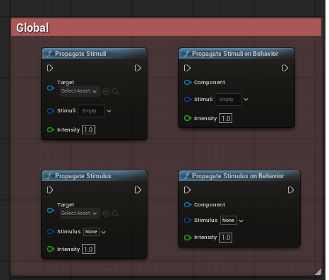
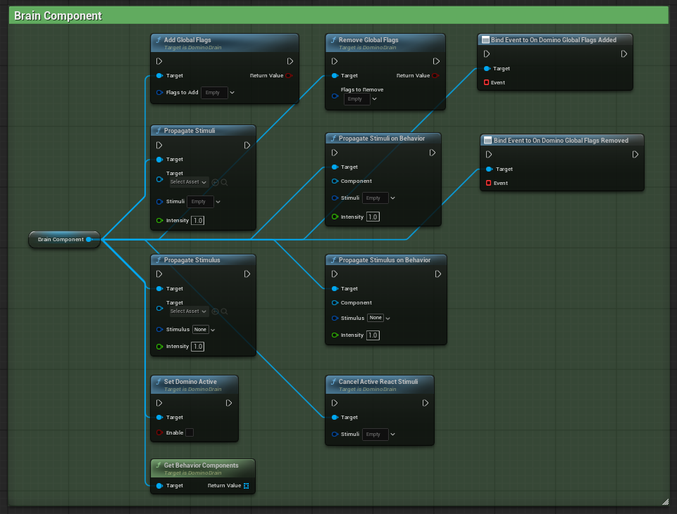
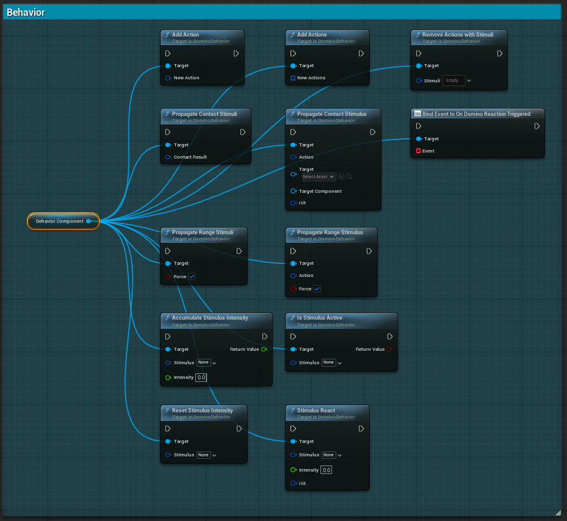

API Reference
This section documents the public API exposed by the plugin.
The API is divided into three logical layers:
- Global
- Brain Component
- Behavior Component
- Meta-Property
Each layer exposes different responsibilities within the systemic framework.
Global
The Global API exposes utility functions used to interact with the systemic framework at a high level.
These functions are typically static helpers and can be accessed from both C++ and Blueprint.

| Function Name | Description |
|---|---|
| PropagateStimuli | Propagates multiple Stimulus through the systemic framework on an actor. Each Stimulus is evaluated and dispatched to eligible Behaviors and Reactions. |
| PropagateStimuliOnBehavior | Propagates multiple Stimulus directly on a specific Behavior Component. Only that Behavior will process and evaluate the provided Stimuli. |
| PropagateStimulus | Propagates a single Stimulus to the target Actor. |
| PropagateStimulusOnBehavior | Propagates a single Stimulus directly to a specific Behavior Component. |
Brain Component API
The Brain Component API exposes Actor-level systemic controls.
The Brain is the central decision layer and registry for all Behavior Components attached to an Actor.

The Brain Component is the central coordination layer of the Domino system. It manages Behavior registration, stimulus propagation, global flags, and systemic activation control at the Actor level.
Blueprint Callable Functions
Stimulus Propagation
| Function Name | Description |
|---|---|
| PropagateStimuli | Propagates multiple stimuli to the specified Actor. Each stimulus is evaluated and dispatched to eligible Behavior Components. |
| PropagateStimulus | Propagates a single stimulus to the specified Actor. |
| PropagateStimuliOnBehavior | Propagates multiple stimuli directly to a specific Behavior Component. |
| PropagateStimulusOnBehavior | Propagates a single stimulus directly to a specific Behavior Component. |
All propagation functions support an optional Intensity parameter (default = 1).
Reaction Control
| Function Name | Description |
|---|---|
| CancelActiveReactStimuli | Cancels all currently active reaction effects matching any of the provided stimulus tags. |
Global Flags Management
| Function Name | Description |
|---|---|
| AddGlobalFlags | Adds one or more global flags to the Brain. Returns true if successfully added. |
| RemoveGlobalFlags | Removes one or more global flags from the Brain. Returns true if successfully removed. |
System Control
| Function Name | Description |
|---|---|
| SetDominoActive | Enables or disables the Domino systemic processing for this Actor. When disabled, stimuli will not trigger reactions. |
Queries
| Function Name | Description |
|---|---|
| GetBehaviorComponents | Returns all Behavior Components currently registered to the Brain. |
Internal / C++ Only Functions
These functions are not exposed to Blueprint and are used internally by the system:
| Function Name | Description |
|---|---|
| OnTickFrequency | Updates elapsed frequencies and triggers range-based propagations. |
| RegisterBehaviorComponent | Registers a Behavior Component to this Brain. |
| UnregisterBehaviorComponent | Unregisters a Behavior Component from this Brain. |
| GetActiveReactStimuliTasks | Returns all currently active reaction effect tasks. |
Behavior Component API
The Behavior Component API exposes localized systemic functionality tied to a specific PrimitiveComponent.
It represents a physical interaction zone capable of emitting Actions and reacting to Stimuli.

The Behavior Component handles localized systemic logic tied to a specific PrimitiveComponent. It manages Actions (stimulus emitters), Reactions, intensity accumulation, and contact/range propagation.
Blueprint Callable Functions
Actions Management
| Function Name | Description |
|---|---|
| AddActions | Adds multiple systemic Actions to the Behavior at runtime. |
| AddAction | Adds a single systemic Action to the Behavior. |
| RemoveActionsWithStimuli | Removes all Actions matching any of the provided stimulus tags. |
Contact Propagation
| Function Name | Description |
|---|---|
| PropagateContactStimuli | Triggers contact-based propagation for all configured stimuli using the provided contact result. |
| PropagateContactStimulus | Triggers contact-based propagation for a specific Action and target. |
Range Propagation
| Function Name | Description |
|---|---|
| PropagateRangeStimuli | Triggers range-based propagation for all configured stimuli. |
| PropagateRangeStimulus | Triggers range-based propagation for a specific Action. |
The optional bForce parameter allows bypassing frequency checks.
Reaction Handling
| Function Name | Description |
|---|---|
| StimulusReact | Requests immediate evaluation of a specific stimulus and triggers eligible Reactions. |
| AccumulateStimulusIntensity | Accumulates intensity for a stimulus and returns the new accumulated value. |
| ResetStimulusIntensity | Resets the accumulated intensity of a stimulus. |
| IsStimulusActive | Returns whether a specific stimulus is currently active. |
Internal / System Functions
These functions are not intended for direct Blueprint usage.
| Function Name | Description |
|---|---|
| DeactivateStimulus | Deactivates a specific stimulus internally. |
| OnTickFrequency | Updates elapsed frequencies and triggers range propagations. |
| OnPrimitiveBeginOverlap | Handles overlap events from the owned PrimitiveComponent. |
| OnPrimitiveHit | Handles hit events from the owned PrimitiveComponent. |
| IncreaseActiveTasksCounter | Increments the active task counter for a stimulus. |
| DecreaseActiveTaskCounter | Decrements the active task counter for a stimulus. |
| HasActiveTasks | Returns whether there are active reaction tasks for a stimulus. |
Protected Internal Functions
| Function Name | Description |
|---|---|
| LoadFromPresets | Loads Actions and Reactions data from assigned Presets. |
| RegisterPrimitiveComponent | Registers the owner's PrimitiveComponent to receive hit events. |
| UnRegisterPrimitiveComponent | Unregisters the PrimitiveComponent from hit events. |
Meta-Property API
The Meta-Property system provides a flexible way to store and retrieve typed data dynamically at runtime.
Meta-Properties are identified by a FName and can store multiple data types.
They are accessible from both C++ and Blueprint.
Meta-Properties are independent from Brain or Behavior Components and can be used as a shared systemic data layer.
Add Meta-Properties
| Function Name | Description |
|---|---|
| AddBoolMetaProperty | Adds or overrides a boolean meta-property. |
| AddBoolArrayMetaProperty | Adds or overrides a boolean array meta-property. |
| AddIntMetaProperty | Adds or overrides an integer meta-property. |
| AddIntArrayMetaProperty | Adds or overrides an integer array meta-property. |
| AddFloatMetaProperty | Adds or overrides a float meta-property. |
| AddFloatArrayMetaProperty | Adds or overrides a float array meta-property. |
| AddStringMetaProperty | Adds or overrides a string meta-property. |
| AddStringArrayMetaProperty | Adds or overrides a string array meta-property. |
| AddGameplayTagMetaProperty | Adds or overrides a gameplay tag meta-property. |
| AddGameplayTagContainerMetaProperty | Adds or overrides a gameplay tag container meta-property. |
All add functions return true if the property was successfully added or updated.
Get Meta-Properties
| Function Name | Description |
|---|---|
| GetBoolMetaProperty | Returns the value of a boolean meta-property. |
| GetBoolArrayMetaProperty | Returns the value of a boolean array meta-property. |
| GetIntMetaProperty | Returns the value of an integer meta-property. |
| GetIntArrayMetaProperty | Returns the value of an integer array meta-property. |
| GetFloatMetaProperty | Returns the value of a float meta-property. |
| GetFloatArrayMetaProperty | Returns the value of a float array meta-property. |
| GetStringMetaProperty | Returns the value of a string meta-property. |
| GetStringArrayMetaProperty | Returns the value of a string array meta-property. |
| GetGameplayTagMetaProperty | Returns the value of a gameplay tag meta-property. |
| GetGameplayTagContainerMetaProperty | Returns the value of a gameplay tag container meta-property. |
If the property does not exist, the default value of the type is returned.
Remove Meta-Property
| Function Name | Description |
|---|---|
| RemoveMetaProperty | Removes a meta-property by name. Returns true if successfully removed. |
C++ Extended API
The following functions are available in C++ for advanced use:
AddMetaProperty(const FDominoSystemicMetaProperty&)GetMetaProperty(FName MetaPropertyName) const
These allow low-level or custom meta-property management.
Architecture Summary
| Layer | Scope | Responsibility |
|---|---|---|
| Global | System-wide | Utilities and manual control |
| Brain Component | Actor-wide | Central registry and decision layer |
| Behavior Component | Local (PrimitiveComponent) | Action/Reaction logic |
| Meta-Property | Actor-wide | Meta-Property logic |